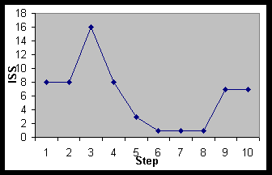

| |
|
|
|
Solving problems on the World Wide Web
Nils Pharo
Faculty of Journalism, Library and Information Science
Oslo College
Norway
Nils.Pharo@jbi.hioslo.no
Introduction
The Web is a digital environment that exists as a parallel universe to the
physical. To exploit the Web users may be required to choose between a
myriad of different paths. It could thus be argued that the time people
spend on the Web is more active and challenging than the time spent engaged
in media like television or books. The Web has only existed for 7 years and
it is constantly expanding, for this reason both its authors and readers
struggle to create fitting mental models of it. Several factors influence
this model building, these include the complexity of the problem; at what
stage of the process he is in; his educational background and previous
experience; the psychological and emotional constraints put upon him by
himself and his surroundings; and the information sources and channels
available. These are factors that are often addressed in the information
seeking literature. Additionally there are constraints set during actual
Web interaction. A fully computerised medium strongly depends on the
possibilities to smoothly present its preconceived properties. It is a
great diversity in the computer equipment available to the users as well as
the capacity of their Internet connection.
The research problems
Users’ problem solving with the Web are dependent on some information
seeking factors and some information searching factors where the latter is
a subset of the former. "Web interaction" is here preferred used
to Web "information searching". Originally it was thought that
the focus should be on the interrelationships between high-level
information seeking factors and the low-level Web interaction. A review of
the literature reveals that very few studies have been performed that focus
on actual use of the Web. It was therefore decided that the project was to
be concentrated on this.
Web interaction should be viewed in the light of the problem at hand.
Problems are of different complexity and they are solvable with different
means. Since individuals’ knowledge structures are dynamic (see Ingwersen
1992) the problem may change constantly, not only as a results of
information retrieval. A problem may in fact "disappear", not
necessarily because it is solved, but because during the problem solving
process the individual discovers, as the result of information retrieval or
other actions – be they internal or external – that the problem needs to be
replaced by a new and more fitting one. Metaphorically one may say that a
change somewhere in the user’s knowledge structure indirectly, or by a
"chain reaction", restructures the knowledge structure and
thus causes him to see things from a new point of view. In other instances
the individual may discover that the problem is unsolvable and choose to
spend his time in a more fertile way.
It is further thought that a problem can be divided into several tasks,
which may be of different complexity. Task complexity depends on several
properties, including difficulty; domain; duration; importance; and
repetitiveness. Routine tasks are often performed in no time without the
need of any information seeking behaviour. The more complex task may on the
other hand be divided into several subtasks. The results from Byström
& Järvelin’s study (1995) indicates that the more complex a task
gets the more necessary it is to enact in information seeking, they say
"as the tasks grow more complicated, the information needs also become
more complicated." (p. 208) From this one should think that
individuals only engage in Web interaction to perform tasks above a certain
level of complexity.
The subject domain to which a problem belongs is interesting because the
extent – both quantitatively and qualitatively – to which different domains
are presented on the Web reflects the development of the Web itself. The
harder sciences (like computer science, mathematics) started to publish on
the Web early and it is still a bias in Academia’s Web publishing.
When individuals decide to engage in Web interaction I believe that it
is possible to identify distinct tasks with identifiable beginnings and
ends. A Web session may consist of one or several task performances, and
these performances may in turn belong to different problem solving
processes or they may all be performed to solve a single problem. Examples
of task may rank from the simple "finding out what is the capital of
Ireland" to the complex, e.g. "purchase the newest album by
Madonna, but make sure to get it at a good price and have it sent here by
the end of the next week". Some tasks may originate during
interaction. Meta-problems exemplify this, e.g. a user wishes to use an IR
tool, but has problems understanding how it works. The first task to be
accomplished is "find out how to use IR tool".
By Web interaction I mean activities involved in accessing and reading
pages on the Web. The factors mentioned above obviously play a role also
during Web interaction, but here factors directly influenced by the
interaction also come into play. These are partly system and partly user
dependent. System dependent interaction factors include the effect of
functionalities embedded in the client program (the "browser") as
well as usability and interface issues. The performance of IR tools is
another important factor. Additionally it is clear that the individual
authors’ ability to use the hypertext format in text structuring is
important. In her master thesis Elisabeth Grylling (1997) proposes the
following criteria to evaluate the quality of Web resources: authority;
accuracy; objectivity; actuality; topicality; coverage; linking; stability;
context dependency; and accessibility. Although the criteria originally was
developed to make rules for including Web resources in a database I believe
they are usable as descriptors of how individuals verify the content of Web
resources. The degree to which users are critical in evaluating Web
resources are of course also dependent on their previous Web experience.
An important factor that influences interaction is the ability of the
active Web page to change or restructure the user’s knowledge structures in
such a way that it helps him getting closer to solving his problem. In
other words, if the page contains the needed information the user may
choose to end the interaction or he may start working with another problem
or task. It is hypothesised that such changes in interaction are
observable.
Different Web resources may also influence how interaction takes place.
Some resources have a content and form that is familiar to the user from
the physical world, e.g. monographs and journals. Users with long
experience probably have used a larger variety of resources and feel
familiar with them, but it may also be that the specific groups of users
publish and reads specific kinds of Web resources.
I believe it is fruitful to look at both the "hows" and the
"whys" of Web interaction. How a person physically act when
interacting depends on the system’s ability to fit his cognitive actions,
i.e. his thoughts. Since the hypertext format is based on a notion of
associative access it is therefore very interesting to try to classify
navigation by both functional and cognitive facets. In the section on
methods a possible way of doing this is examined.
The Web is one out of many possible information sources available to
problem solvers. In certain circumstances problem solvers may choose to use
the Web as their information source, this, among other things, depends on
the kind of problem they have and the tasks that need to be accomplished to
solve the problem. The research problems I seek to answer are the
following:
- Is it possible to identify patterns of cognitive and physical nature in
Web interaction?
- If it is possible to identify such Web
interaction patterns, is there any correlation between the nature of these
interaction patterns and particular kinds of Web resources?
In this section I present the collection methods hitherto used, and the
methods I plan to use in the data analysis.
Data collection and analysis
LIS students on the brink of ending their education have been chosen as
objects of study. They constitute an actual group of problem solvers; they
need to write a final thesis to have their diploma. Although the students
do not have a long experience in use of IR tools, their training in this
area is up-to-date. Additionally the students have quite a long experience
in Web use; the Web is used actively in several courses followed by the
students and they have had Web access for three years. For a second study I
have planned to use graduate students in LIS who are working on their
master thesis.
I believe that using experts (Ingwersen, 1992 p. 141) as my objects of
study may help to reveal whether there are specific properties embedded in
their IR knowledge that are of particular help during Web interaction. On
the other side it could be the exact opposite, perhaps their IR knowledge
in some ways actually hinder them from efficiently exploiting the Web. This
is not a main research question in my project, but it may be a potential
interesting spin off effect to follow up.
Data collection
To collect my data I made agreements with the students to contact me when
they want to use the Web as part of their thesis work. I put no constraints
on the number of students working together, i.e. if two students wanted to
conduct a Web session together they were allowed to do so.
I have equipped one computer with a GrandArt video converter, which is a
little black box that converts computer screen signals to video format. The
converter also has a microphone connected to it, which makes it possible to
record sound data simultaneously. The only external equipment needed is a
VCR to record the data.
The computer is connected to the faculty’s local area network and the
students may log in to their own accounts and thus use a browser, which to
a certain degree may be individually configured. The students’ default
browser is set to be Netscape, version 3.03.
In order to learn more about the problem at hand and the users’
intention with the forthcoming session an unstructured open-ended interview
is conducted in front of each Web session. Here the students are asked to
tell about what they have done since the last session; how they feel about
the progress of their work; why they want to use the Web today and similar
questions. A second short and unstructured open-ended interview is
performed after the session. In this interview the students are asked how
they felt about the session and whether they could have used other sources
to answer their questions/accomplish their task(s). The follow-up interview
is also used to clarify whether the user was able to do what he intended.
It is also possible for the observer to ask questions that may help him in
clarifying the intentions behind particular interaction activities.
The student’s are asked to talk-aloud while interacting with the
Web. It is an important distinction between talk-aloud and
think-aloud, since the latter method demands that the user formulate
thoughts that are not verbal, but e.g. visual. When a user is asked to talk
aloud he is only to voice those thoughts that are already encoded in verbal
form (Ericsson & Simon 1996). The problem with the think-aloud
technique is that it prolongs the sessions since the user is required to
encode and utter every thought verbally. Talk-aloud protocols on the other
hand do not intercept mental processes that are not encoded verbally.
During the session an observer watches the sessions and makes sure the
computer and recording equipment work satisfactory. The observer is not to
engage in any conversation with the user, but he may ask the users to
"keep talking" to keep the loud-talking process going.
Data analysis
The model developed by Belkin, Marchetti & Cool (1993) has been used to
analyse a few tasks. This is a four-dimensional model focusing on both
functional and cognitive aspects of information strategies. The dimensions
were method (scan|search), goal (learn|select), mode
(recognise|specify) and resource (information|meta-information). The
analyses performed revealed problems related to the different dimensions.
Some of these problems are directly related to the hypertext format and
some could be of a more general nature. Below one task is analysed.
The example shows a task performed by users who are apparently quite
uncertain about the topic they try to find more information about. They
look for information on "Index translatonium", which appears to
be a database on translation. The task starts with an intermezzo where the
users try to find an entry for Alta Vista in the bookmark file (ISS 8),
without success. They then inspect the page currently in the browser and
finds and select the link directly to Alta Vista, this is also classified
as ISS 8 since they look for the link in a list of links to various IR
tools.
In Alta Vista the users enter the query "Index translatonium"
(ISS 16), thereafter they examine and follows the first entry in the
results list (ISS 8). Thereafter they read the page to learn more about
what order to learn more about what "index translatonium" is (ISS
3). The users look through the page, they are obviously uncertain about how
to proceed ("What’s this? [pause] only information about?" [a
CD-ROM database]), they end up choosing a random link ("but can’t you
just push on of those [buttons] and see what happens?"), this is an
example of ISS 1. The next two pages are accessed similarly (ISS 1), then
they find and follow an explicit link to "Index translatonium"
(7), but this turns up to be a link to the page they originally found. They
have now obviously learnt that it is a database, and they do a half-hearted
attempt at finding a way to search it by following a link saying "New
search" (ISS 7). This leads them to an irrelevant page and they
continue trying to solve another task.

Figure 1 Graphical
display example
For the purpose of analysing Web session it is felt
that the mode dimension is the most difficult to value. It does
characterise an important aspect of IR interaction – uncertainty, if
the user knows what he wants to find, i.e. he can specify it, his
uncertainty is low. Similarly he or she is probably more uncertain when
he/she does not exactly know what to look for. It is perhaps easier to
identify users’ level of uncertainty than the recognise/specify mode they
are in during searching. The limitation of method to
"scanning" and "searching" is problematic when it comes
to dealing with following links. Following links can be seen as a parallel
to picking a book from a shelf, thus it has been characterised as scanning.
This, however, makes it impossible to distinguish the reading or
overlooking of a page from the selection of a link to access a new page.
These are clearly different kinds of interaction methods and it is probably
wise to treat them differently.
This raises two further questions: Should we distinguish between the
following of different kinds of links? And how should we treat predefined
searches implemented as links? These questions illuminate some features
that characterise Web authoring and thus affect the ways people are able to
interact with the Web.
When analysing the sessions it became apparent that the distinction
between the two resource-types wasn’t as clear as it was thought to be. In
a fully digitised environment like the Web every page or resource is in
principal only a mouse-click away, while in the "real" world IR
systems and documents are physically separated. Belkin et al. (1995 p. 381)
exemplifies the use of ISS 5 by a user scanning the shelves in a library,
i.e. the resource is classified as information. Web IR tools include direct
links to the resources, the results lists could thus be compared to a shelf
of books where each document can be picked out, looked at and returned. It
should not be controversial to claim that when a user inputs a query in a
search engine the resource he uses is to be classified as meta-information.
How to treat the output of a search is, however, not unproblematic. Should
it be focused on the entries’ role as resource surrogates, or should the
entries be treated like anchors to the "real thing", i.e.
"similar" to the back of books on a shelf? Since the surrogates
that are presented in the results lists are generated from a database and
because this database will never be fully updated and thus in theory do not
represent the current content of the page it seems natural to treat them as
meta-information. Manually generated subject indices like, for instance,
Yahoo! do not cause the same problem. As long as the subject indices
contain intellectually created descriptions of the entries they should be
treated like meta-information. The same is usually true for those privately
generated "favourite" pages, which thus are defined as
meta-information.
Possible interdependencies between dimensions are not treated here.
Work plan and current status
The project is scheduled to run over a period of four years, 75 % of the
time is to be devoted to the project, i.e. 36 months. The following time
schedule is approximate and some parts of the work will undoubtedly be
overlapped:
| Literature and methods studies | 6 months |
| Development of methods, pre-surveys, method evaluation | 4
months | | Survey and interviews | 8 months |
| Handling of results, writing down results | 4
months | | Analysis of results | 3 months |
| Conclusion | 3 months | | Thesis production
and other forms of documentation | 8 months |
| Sum | 36 moths |
Throughout the period I will also need to follow courses and seminar to
claim the necessary credit points from Tampere University.
At this point I have been able to claim 31 out of the 40 credit units
necessary. To no surprise the different points on the work plan to a
certain degree merge. I have performed literature studies in the fields of
IR, information seeking, hypertext, and related areas. The collection
methods are developed and I have collected approximately 14 hours of data.
I also plan to collect some more data. I have started to transcribe the
data and done a pre-analysis of a small amount of data to test a method of
analysis.
References
- Belkin, N. J, Marchetti, P. G. & Cool, C. (1993). "BRAQUE: design for an interface to support user interaction in information retrieval". Information processing & management, 29, 325-344
- Belkin, Nicholas J. et al. (1995). "Cases, scripts, and information-seeking strategies – on the design of interactive
information-retrieval systems". Expert Systems with Applications, 9, 379-395.
- Byström, Katriina & Järvelin, Kalervo (1995). "Task complexity affects information seeking and use". Information Processing and Management, 31, 191-213.
- Ericsson, K. Anders & Simon, Herbert A. (1996). Protocol analysis: verbal reports as data. – Cambridge, Mass.: MIT Press.
- Ingwersen, Peter (1992). Information retrieval interaction. London: Taylor Graham.
- Grylling, Elisabeth (1997). Organisering av World Wide Web-referanser til undervisningsformål ved Høgskolen i Oslo. Oslo: Høgskolen i Oslo.
Information Research, Volume 4 No. 2 October 1998
Solving problems on the World Wide Web, by Nils Pharo
Location: http://InformationR.net/ir/4-2/isic/.html © the author, 1998.
Last updated: 15th September 1998
|